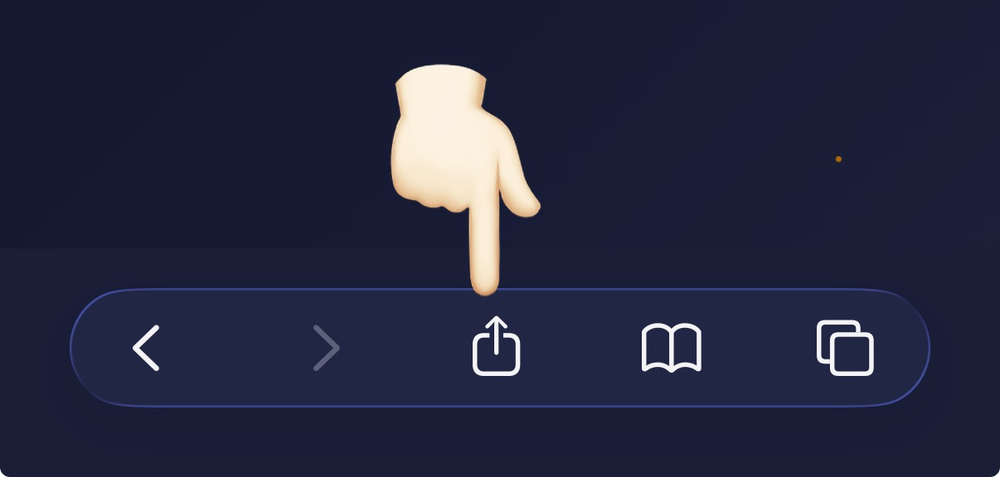
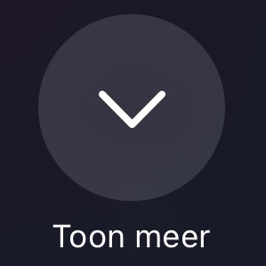
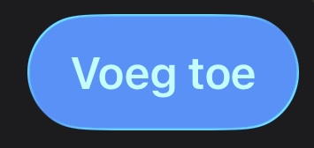
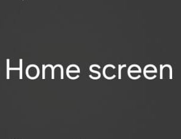

In just one touch
1️⃣

2️⃣

3️⃣
4️⃣

Daarna sluit dit scherm.
Start de app vanaf je mobiel.
1️⃣
2️⃣
3️⃣

4️⃣
Daarna sluit dit scherm.
Start de app vanaf je mobiel.
Share this code with followers
Live tracking active
— Optie 1: Master (Jij deelt je locatie)
— Optie 2: Follower (Volgen)
— CENTER: ON/OFF - Kaart volgt je locatie automatisch
— Zoom (+ / −) - Boven op kaart. Range: 10-20
— Track width (− / +) - Onder op kaart. Range: 3-15px
— GO knop (onderaan) - Verbergt alle controls, alleen kaart zichtbaar
— Load: Laad een route
— Save: Sla je tracking op
— Delete: Verwijder ingeladen route
— ZOOM:
— TRACK:
Live Tracker App v2.31 © Umop3p1sdn